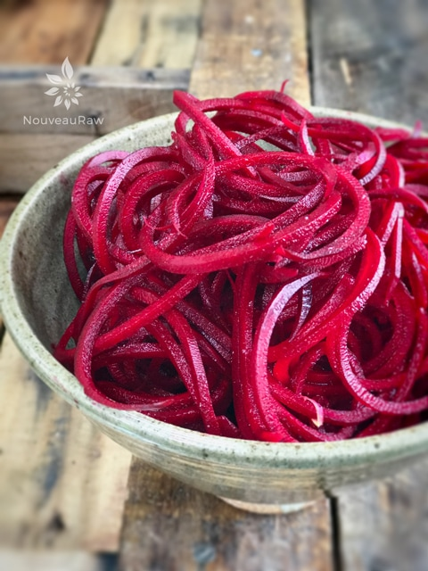

Red Beet Noodles

~ raw, vegan, gluten-free, nut-free, alkaline ~
Beets boast a deep, rich red color combined with a sweet, and earthy flavor. They are not very glamorous, but there isn’t anything quite as vibrant as red beet noodles. Word of caution, they like to “bleed”.
Import Info Up Ahead
If you’re going to make a salad with beet noodles, the beets will often coat the salad with their dark red color turning everything a pretty pink. And as pretty as pink can be… it might not be the desired overall look to your recipe. To avoid bleeding of color into other ingredients, add beets just before serving if possible.
The juice of a beet is beautiful and nourishing for your insides, but not so much for objects in the outside world… it loves to stain. This is the prime time to bring out that cooking apron to protect your clothing.
Slicing beets and/or making beet noodles can stain your cutting board and other fine objects if not careful. To help remove any stains, scrub your board with a paste made of baking soda and water. To remove the bloody stain from your hands, rub them with lemon juice, or you can wear some rubber gloves. I don’t mind pink palms, kind of makes me smile when I look down at them.
Beets can be found year-round but are at their best in late summer and autumn. Look for firm, rounded vegetables with smooth skins. Fresh beets, sold in bunches, should have the greens attached and 1 to 2 inches of the root end. Do not buy beets with wilted, browning leaves—the leafy greens indicate the freshness of the beets. If the greens have been trimmed, look for bunches with at least 2 inches of stem still attached.
Once home, cut the greens from the roots, leaving 1 to 2 inches of stem attached. The beets will not spoil if left at cool room temperature for a few days, but they do best when refrigerated for up to 10 days.
Beets pair well with other root veggies, apples, allspice, bay leaf, cloves, chives, dill weed, garlic, mustard seed, thyme, and citrus. I created a simple raw noodle salad that consisted of beet, carrot, and apple noodles, tossed with simple creamy dressing and a sprinkle of raisins over the top. Downright scrumptious!
Ingredients:
Preparation:
- Be sure to pick the freshest, in season, beetroot that you can find. This will ensure that you get the best tasting noodles possible.
- Look for firm roots. If the flesh is mushy, it won’t work on the spiralizer.
- With a potato peeler, remove the skin and then cut a flat top and bottom.
- Place the unit on the countertop and press down on the spiralizer to engage the suction cups and secure.
- Insert the blade cartridge you’d like to use, make sure that it clicks into place.
- Place the center of the root onto the cylinder part of the blade and press the teeth of the handle into the other side of it.
- Take hold of the handle on the bottom (the horizontal one) with one hand and then spin the handle with the teeth to spiralize. Press down with steady forward pressure, using the handle that you’re gripping, for best results.
- Before dressing up the noodles, take scissors when you’re done spiralizing and cut the noodles into manageable sized pieces. Just grab a bunch of noodles and roughly snip. Or enjoy that never-ending noodle!
- You can make noodles in advance, they should keep for 5-7 days in the fridge, without sauce.
To clean the spiralizer:
- Purchase an inexpensive handled brush for cleaning the blade parts and hard to reach parts on the unit. This will save your fingers and prevent nicks from happening on the blades, keeping them nice and sharp.
- Be sure to quickly rinse the unit after creating noodles. The juices from certain root veggies can stain the unit.
- Dry the blades well before putting them away.


GEFU Spiralfix Spiral Slicer
- Can be used in the left or right hand.
- 4 different widths of cut for creative recipes: Spiral cut across the entire width of the material, 3 mm, 6 mm, or 12 mm wide adjustable via adjusting wheel
- Folding lid for easy filling
- Detachable non-slip holding container for safe standing
- Material: stainless steel, ABS plastic, SAN
- Splash-guard lid with drive unit detachable for easy cleaning. Dishwasher-safe
Spiralizer 7-Blade Vegetable Slicer
- This slicer comes with 7 different blades which give you 7 completely different textures and shapes.
- Comes with 420 high carbon cutlery grade stainless steel blades and stronger making it possible to Spiralize harder root vegetables like sweet potatoes and turnips that previously broke Spiralizer handles
Potato Peeler
- Wash and peel the outer skin off of the veggie.
- Hold the veggie at one end and in a long stroke motion, run the peeler from top to bottom.
- Rotate the veggie in a circular motion and continue peeling until you reach the seeded core (if there is one). Stop once you reach this. Don’t throw it away, use it in a smoothie or salad.
© AmieSue.com